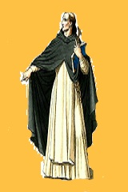

Bishops are typically found mingling with the nobles in Autumn
providing protection and wards against forces that would endanger its citizens. Some forsake this duty in order
to become nomads that share their gifts with those on the outskirts of civilization. Regardless of their chosen path,
all Bishops are required to perform a pilgrimage before they can practice magic. Whatever their calling,
they are one of the few classes in the game with access to purification spells that can cleanse tainted resources found
within the Dawn lands.
Bishops can utilize a variety of healing spells and utilize light and dark spells to protect themselves on their travels.
When on their pilgrimage, many bishops devote themselves to a particular calling before returning to normal civilization.
Bishops are particularly inclined to following a certain way of life and thus tend to eventually forsake either the light
or dark schools of training in accordance with their newly discovered calling.
Beginning at level 3, Bishops choose their path in life and choose from one of three subclasses to reflect the findings
of their pilgrimage:
Preliminary Traits of Bishops
|
Bishop
|
|
Subclasses
|
Governing Attributes
|
Favored Weapons
|
|
Cleric
|
Intelligence, Spirituality
|
Maces, Staves
|
|
Necromancer
|
Spirituality, Vitality
|
Rods, Staves
|
|
Paladin
|
Charisma, Spirituality
|
Basic, Martial weapons
|
-
Cleric. Clerics see the value of both life and death and thus pursue a balance
between the two opposing forces. Clerics gain access to all light and dark spells, but lack the favored
attributes of those fully dedicated to a particular side. They are one of the most diverse classes available
and possess a large degree of self-sufficiency. Despite this, they are limited to a select number of spells per day
regardless of level. At later levels, they are capable of taking on almost any role
due to their large spell pool.
-
Necromancer. Upon seeing the desolation of the world outside of Autumn, Necromancers turn to the dark side
of magic with such zeal that they gain the ability to raise the dead. By giving up the restorative magic school, Necromancers
become potent damage dealers that have the unique ability to permanently weaken enemies with enervation spells. At later levels,
their devotion grants them the ability to turn into an undead being themselves and use their dark magic to augment their own abilities,
and even heal themselves with negative energy.
-
Paladin. Warriors of light, Paladins are blessed with the ability to vanquish evil and inspire good in others around them.
Paladins are one of the few classes able to equip heavy armor and shields without penalty and thus make great protectors. They also gain the
ability to ward evil and can see through illusions that others cannot. Although they do not gain as many spell slots as Clerics or Necromancers,
they gain passive benefits that enhance both their own abilities and those within the range of their aura. At later levels, Paladins receive more
powerful, extended auras and are the only class capable of reviving a character with their unique ability Salvation.
Afflicted with an overexposure to the rays of Rahsin, Bloodletters suffer from a blood poison that
leaves them with a sickly appearance and an unnatural dependency on the radiation emitted from the mysterious
sun. Bloodletters are native to the Dawn lands and rarely venture outside of their domain. Those that
are seen outside of their homelands must carry rations from the Dawn lands else they will suffer withdrawal
symptoms from their condition.
Many that possess this sickness die at a young age, but those that survive can learn to harness their condition
as a weapon. By utilizing their own lifeforce, Bloodletters can poison others and debilitate them with a variety of
curses. As they gain more skill, they can use the lifeforce of their enemies as the catalyst for more powerful abilities.
Beginning at level 3, Bloodletters can choose from one of three different subclasses as part of their development with
each of them specializing in a particular area of expertise:
Preliminary Traits of Bloodletters
|
Bloodletter
|
|
Subclasses
|
Governing Attributes
|
Favored Weapons
|
|
Bloodserker
|
Vitality, Strength
|
Bloodoath Weaponry
|
|
Hexer
|
Vitality, Intelligence
|
Daggers
|
|
Red Mage
|
Vitality, Spirituality
|
Staves, Rods
|
-
Bloodserker. Favoring weapons crafted from their own lifeforce, Bloodserkers develop a favored weapon
early in training that they prefer to fight with. Although this gives them a free proficiency with any weapon
type, they are limited to two weapon types at the start. As they level up, Bloodserkers gain the ability to craft
more weapons and gain the ability to augment their damage as they take more damage with their Bloodoath weapons.
-
Hexer. Unlike a Bloodserker, Hexers prefer the use of daggers in order to harness their powers in a controlled
manner. Using their own blood as the material component, Hexers inflict debilitating curses that can blind, poison, or even
bind foes in position. As they level up, Hexers gain the ability to inflict damage to the opponent by inflicting damage over time
as the opponent becomes increasingly injured. Hexers work best when in a party that benefits from their support abilities.
-
Red Mage. Red mages channel their lifeforce to cast magic from a variety of schools. Though they lack true magical
training, red mages can cast both healing and damaging spells from their repertoire. Additionally, due in part to surviving in the Dawn
lands, red mages can learn any lifeforce-related abilities used by creatures in the Dawn lands. At later levels, Red mages gain access to
an unique damage type in Radiant energy that is especially effective against inhabitants of the Dusk lands.
Rogues excel in moving quickly and silently while surviving in an array of environments. Depending
on their specialty, Rogues can perform a variety of roles in a party with their skill pool. Although they lack the survivability of
other fighters, the Rogue's ability to scout terrain or set and disable traps makes them invaluable in enemy territory. Rogues rely on stealth
to accomplish their goals. The majority of Rogues that are encountered are usually Scouts in exploration parties attempting to map out and
reclaim parts of the Dawn and Dusk lands.
Rogues are the only class that gains access to sneak attack damage. By attacking an enemy that is not actively focused on them, Rogues do bonus
damage in addition to their normal damage. This is an important aspect of rogues since they typically favor quick, small weapons that allow them to
slip in and out of danger quickly. Rogues perform best in parties with a protector such as a Paladin to act as a shield that allows a Rogue to remain
mobile in front of enemies.
Preliminary Traits of Rogues
|
Rogue
|
|
Subclasses
|
Governing Attributes
|
Favored Weapons
|
|
Assassin
|
Agility, Intelligence
|
Daggers, Throwing weapons
|
|
Scout
|
Agility, Strength
|
Bows, Short swords
|
|
Tinkerer
|
Charisma, Intelligence
|
Crossbows, Gadgets
|
-
Assassin. Assassins especially favor daggers in combat situations as
a single, well-placed strike can end a battle before it even begins. In addition to the
standard proficiency Rogue's have with daggers, Assassin's gain more base damage to their
dagger attacks as they level up. Additionally, they gain bonus sneak attack damage as they
gain experience. At later levels, they are able to perform an assassination skill that can
instantly kill an unaware foe if they fail a Vitality save regardless of the opponent's defenses.
-
Scout.
Akin to Rangers, Scouts favor bows and shortswords in battle. Unlike an Assassin, Scouts gain mobility
perks as they level. They gain bonus movement speed as they level up and can pass through difficult terrain
without penalties. They have the longest sneak attack range of all Rogue classes thanks to their bow proficiency
as well. At later levels, Scouts gain the ability to negate enemy sneak attack bonuses and penetrate heavily armored
enemies, ignoring their defense rating, by using their examine skill as a bonus action.
-
Tinkerer. Tinkerers enjoy the art of crafting more than any other class in the game. Tinkerers are
able to make traps, explosives, and other gadgets from smoke grenades to poisons. The Tinkerer's understanding of the
wild is unparallel amongst Rogues. They have the unique ability to make potions and understand magical scrolls which
gives them a wide range of utility. At later levels, Tinkerers receive the unique ability to create and use flint-lock guns
and ammunition in addition to their other creations giving them superior damage at the cost of long-range accuracy.